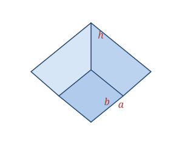

A pyramid frustum is a square pyramid whose top has been cut off by a plane parallel to the base. What remains has two square faces — a larger bottom of side a and a smaller top of side b — joined by four trapezoidal side faces. The slant height l runs up the middle of a side face.
Real-world examples include the base of the Washington Monument, the stepped shape of many pedestals and planters, and — most famously — the truncated pyramid on the back of the U.S. one-dollar bill.
Defined by the bottom side a, top side b, and height h; the slant height l follows.
| Faces | 6 (2 squares + 4 trapezoids) |
|---|---|
| Bottom side | a |
| Top side | b |
| Height | h |
| Slant height | l = √(h² + ((a − b)⁄2)²) |
Slant height l = √(h² + ((a − b)⁄2)²)
Volume V = (1⁄3)h(a² + ab + b²)
Lateral SA LSA = 2(a + b)·l
Total SA SA = a² + b² + 2(a + b)·l
Take a frustum with a = 6, b = 3, h = 4.
l = √(h² + ((a − b)⁄2)²) = √(16 + 1.5²) = √18.25 ≈ 4.27
V = (1⁄3)h(a² + ab + b²) = (1⁄3)(4)(36 + 18 + 9) = (1⁄3)(4)(63) = 84
LSA = 2(a + b)·l = 2(9)(4.27) ≈ 76.90
Total SA = a² + b² + LSA = 36 + 9 + 76.90 ≈ 121.90
Ancient Egyptian scribes already knew the volume formula for a square frustum — the Moscow Mathematical Papyrus, written around 1850 BCE, records exactly this calculation.